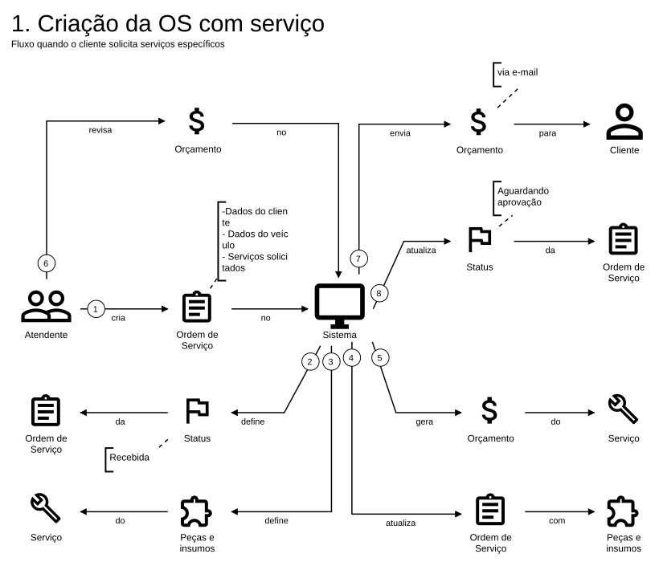
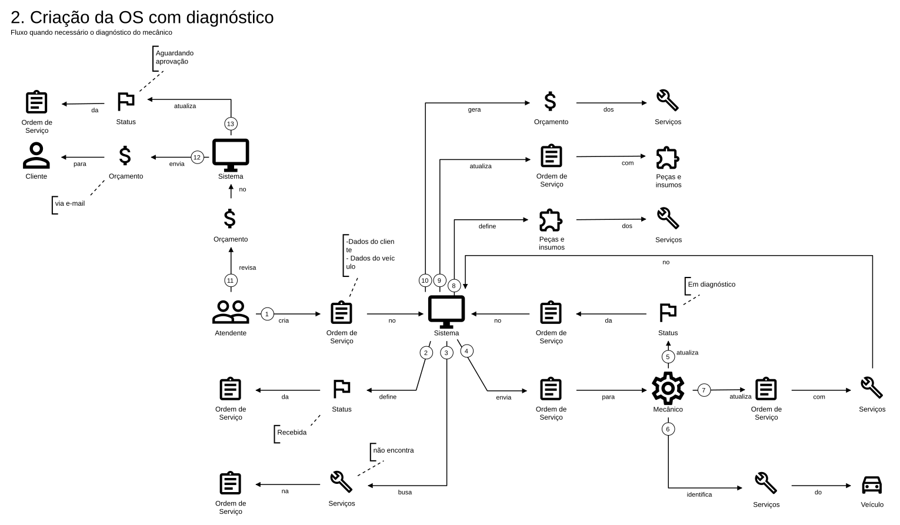
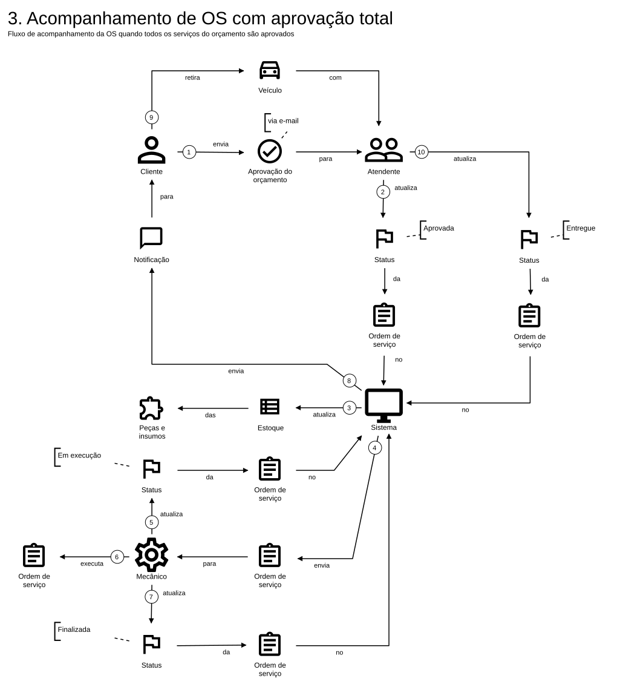
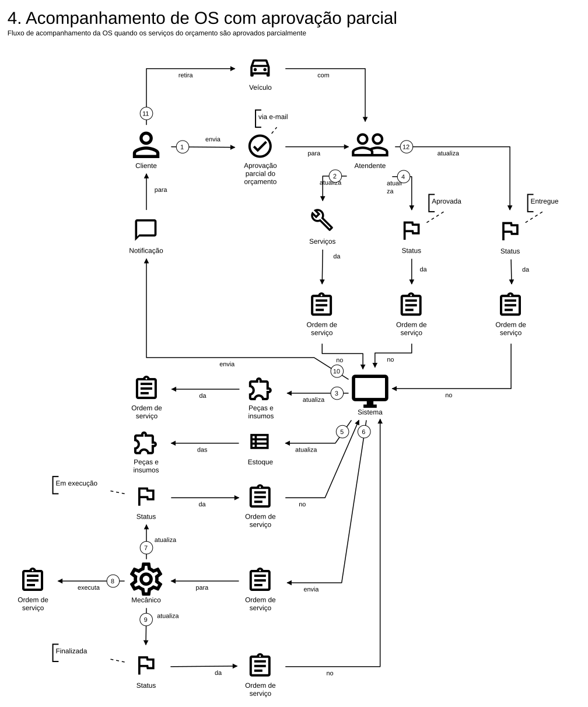
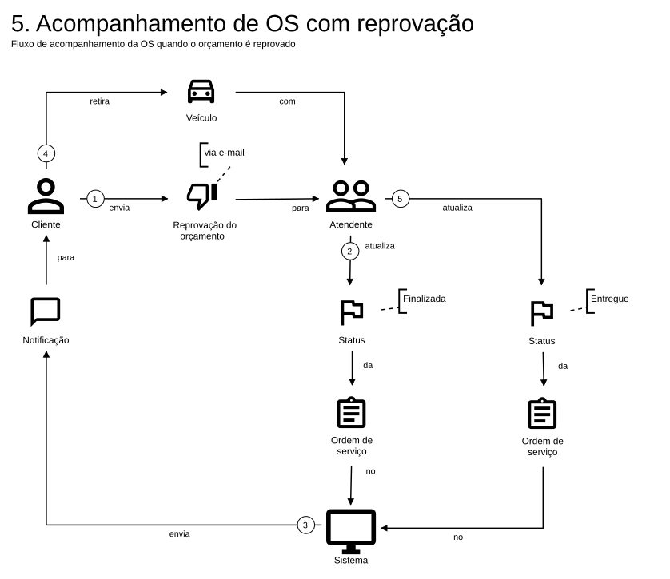

Tech Challenge SOAT, fase 1, grupo 31
Domain Storytelling feito pelo grupo no egon.io (25/09/2026) e diagramas complementares de DDD (agregados, entidades, objetos de valor, contextos delimitados e máquinas de estado) montados a partir do board de Event Storming no Miro e conferidos com o código.
| Página | Diagrama | Origem |
|---|---|---|
| 2 | 1. Criação da OS com serviço | egon.io (docs/ddd/egon/1-criacao-os-com-servico.egn.svg) |
| 3 | 2. Criação da OS com diagnóstico | egon.io |
| 4 | 3. Acompanhamento com aprovação total | egon.io |
| 5 | 4. Acompanhamento com aprovação parcial | egon.io |
| 6 | 5. Acompanhamento com reprovação | egon.io |
| 7 | 6. Gerenciamento de peças e insumos | egon.io |
| 8 | Agregados, entidades e objetos de valor | Miro (agregados) + código |
| 9 | Contextos delimitados e mapa de contextos | Miro + código |
| 10 | Máquinas de estado da OS e do orçamento | código |
Cada história traz, ao lado, como o código atual implementa o fluxo. Onde a história
e o código divergem, a divergência está indicada e também listada em docs/ddd/linguagem-ubiqua.md
(seção "Relação com o código"). O board do Miro: https://miro.com/app/board/uXjVHnerRBQ=/
Fluxo quando o cliente já sabe quais serviços quer (ex.: troca de óleo).

POST /api/ordens-servico abre a OS em RECEBIDA com cliente, veículo e relato; publica OrdemServicoCriada e o cliente recebe o código de acesso por e-mail (simulado em log).POST /api/orcamentos recebe serviços do catálogo e peças do estoque, reserva as peças e calcula o total. A OS passa por EM_DIAGNOSTICO e vai para AGUARDANDO_APROVACAO na mesma operação.OrcamentoGerado).Fluxo quando o problema precisa ser identificado antes do orçamento.

EM_DIAGNOSTICO é marcado automaticamente pelo GerarOrcamentoUseCase quando a OS ainda está RECEBIDA.ADMIN e ATENDENTE (Papel).Todos os serviços e peças do orçamento são aprovados.

POST /api/publico/orcamentos/{id}/aprovar com CPF/CNPJ e código de acesso; ou pelo atendente: PATCH /api/orcamentos/{id}/aprovar.APROVADO, OS APROVADA, reservas viram baixa (confirmarBaixa), evento OrdemServicoAprovada com e-mail simulado.PATCH /api/ordens-servico/{id}/iniciar-execucao, /finalizar (e-mail "veículo pronto") e /entregar.O cliente aprova só parte dos serviços e peças.

servicosAprovados e pecasAprovadas.Orcamento.aprovar remove os itens não aprovados, recalcula o total e marca APROVADO_PARCIALMENTE.cancelarReserva); as aprovadas recebem baixa.REJEITADO e a OS RECUSADA.O cliente reprova o orçamento.

POST /api/publico/orcamentos/{id}/rejeitar (cliente) ou PATCH /api/orcamentos/{id}/rejeitar (atendente).REJEITADO, as reservas voltam ao estoque e a OS vai para RECUSADA, que é estado final: não passa por Finalizada nem Entregue. O cliente recebe o e-mail "orçamento não aprovado".Na história do grupo: com a OS Aprovada, o sistema atualiza o estoque de peças e insumos.
ProdutoEstoque.reservar tira do disponível e soma no reservado (falha se faltar saldo).confirmarBaixa das peças aprovadas.cancelarReserva devolve ao disponível./api/estoque)
POST /{id}/adicionar e POST /{id}/remover, que mexem só no disponível; reservas ficam com o orçamento.No Miro o grupo separou os agregados Cadastro, Relatório, Orçamento, Estoque e Ordem de Serviço. No código, "Cadastro" virou dois agregados (Cliente e Veículo), o "Relatório" foi absorvido pelo Orçamento (o diagnóstico vira os itens) e o catálogo de serviços ganhou o seu.
OrdemServico)id, cliente e veículo (por id), relato do problema, status, data de abertura e conclusão e código de acesso.TransicaoStatus (histórico de status, gravado em historico_status_ordem_servico), StatusOrdemServico (enum).iniciarDiagnostico, anexarOrcamento, aprovarOrcamento, recusarOrcamento, iniciarExecucao, finalizar, entregar, cancelar); relato entre 10 e 500 caracteres.OrdemServicoCriada, OrdemServicoAprovada, OrdemServicoRecusada, OrdemServicoCancelada, OrdemServicoFinalizada.Orcamento)ordemServicoId; tem data de criação, validade e status.ItemServico (serviço do catálogo, descrição, valor da mão de obra), ItemPeca (peça do estoque, nome, quantidade, valor unitário), StatusOrcamento.PENDENTE; total = mão de obra + peças; validade no futuro; expira se decidido depois da validade; aprovação total, parcial ou rejeição.OrcamentoGerado.ProdutoEstoque)Cliente)Endereco, Estado (UF); documento validado como CPF ou CNPJ com dígitos verificadores.Veiculo)/api/servicos. O orçamento referencia o serviço por catalogoServicoId e guarda uma cópia da descrição e do valor do momento.Agregados se referenciam só por id. Usuário (Usuario, Papel) fica no contexto genérico de autenticação.
*/domain)8Cada contexto é um módulo do monólito (br.com.fiap.oficina_mecanica.*), dividido em domain, application e infrastructure.
VerificadorCliente, VerificadorVeiculo, ConsultorClientes, ConsultorVeiculos) implementadas por adaptadores, que funcionam como camada anticorrupção.ProdutoEstoque na mesma transação para reservar, baixar e devolver peças.catalogoServicoId e uma cópia da descrição e do valor.OrdemServicoCriada, OrcamentoGerado, OrdemServicoAprovada, OrdemServicoRecusada, OrdemServicoCancelada, OrdemServicoFinalizada) são publicados depois do commit e viram e-mail simulado. Não há WhatsApp nem PDF.StatusOrdemServico)Estados em preto são finais. O cliente é avisado por e-mail na criação, no orçamento gerado, na aprovação, na recusa, no cancelamento e na finalização.
Cada mudança gera uma TransicaoStatus (status anterior, novo e horário) no histórico. É a base do acompanhamento pelo cliente e do cálculo do tempo médio de execução (intervalo entre EM_EXECUCAO e FINALIZADA).
StatusOrcamento)Só o orçamento PENDENTE aceita itens ou decisão. A expiração não depende de agendamento: é verificada no momento da ação.
OrdemServico, Orcamento)10